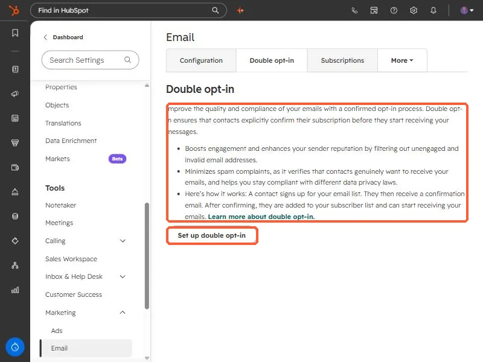

Short answer
With double opt-in on, contacts created through forms get a confirmation email, and you cannot email them until they click the link. Existing contacts you already sent marketing emails to count as confirmed. Basic double opt-in applies to every form and page and uses a default confirmation email. Advanced features, such as turning it on for only some forms and customizing the email, need Marketing Hub Professional or Enterprise. It applies to marketing email only, not SMS or WhatsApp.
1. Where it lives
Open email settings, and click the Double opt-in tab. HubSpot's summary: double opt-in makes contacts explicitly confirm their subscription before they start receiving messages. The tab lists the benefits it claims, including better engagement and sender reputation, fewer spam complaints, and support for data privacy compliance, and has a Set up double opt-in button.


2. How it works
- A contact signs up on a form.
- They receive a confirmation email.
- After they click the link, they are added to your subscriber list and can receive marketing email.
HubSpot says contacts created through HubSpot forms, non-HubSpot forms, lead ad forms, or the Forms API get the follow-up email, and you cannot email them until they confirm.
3. Who counts as confirmed
- Existing contacts you previously sent marketing email to in HubSpot.
- Existing contacts sent a double opt-in email who click the link.
- New contacts who convert on an applicable form and click the link.
4. Limits to know
- Marketing email only. It cannot manage WhatsApp or SMS subscriptions.
- Tied to the email address. If a contact's primary email changes, the old confirmation does not carry over.
- Workflows. A workflow that sends to an unconfirmed contact retries for up to one day, then stops.
- Basic vs advanced. Starter and free tools get basic double opt-in for all forms and pages with a default confirmation email, though the sender, language, and subject line can be customized.
A clear consent checkbox and a confirmation email that looks like you reduces drop-off. See add a consent checkbox to a form.